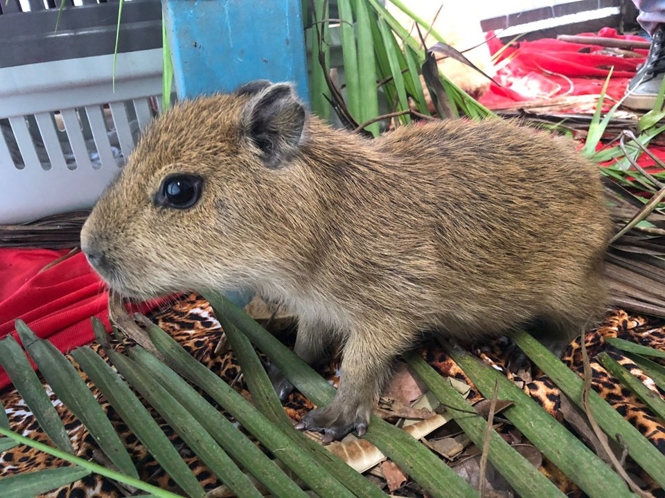

PROJECT #1

STACKED PIRATES
Puzzle 3D isométrico de piratas procurando por um tesouro.
Um jogo de puzzle em que você usa seus piratas para conseguir atingir locais e passar por certas áreas atrás do seu objetivo de encontrar o baú soterrado pelo mapa. O projeto está sendo produzido para uma disciplina da faculdade e contém o foco na mecânica de utilizar a pilha de piratas para conseguir navegar no mapa e conseguir passar pelas fases. O jogo tem uma estética low-poly e tem uma estilização cartoon feita por meio de shaders e efeitos visuais. Este projeto foi feito inteiramente por mim, desde a parte visual até a parte do código.
C#UnityShadersBlender